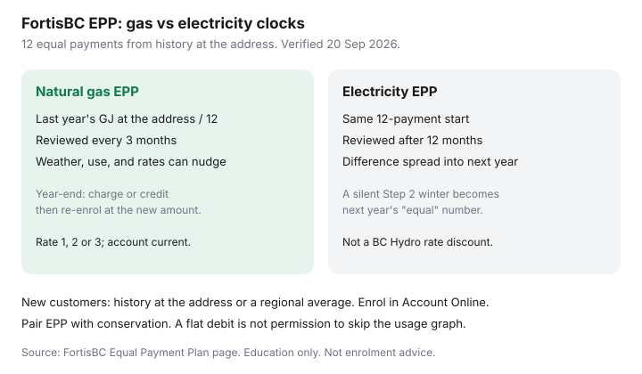

Utilities · British Columbia
FortisBC Equal Payment Plan: How It Works for BC Gas and Electricity Customers
B.C. households enrol in FortisBC’s Equal Payment Plan because January gas looks terrifying, then treat the flat debit as “the bill is fine.” EPP is a cashflow shape. Winter still happened. If last year’s occupant kept the house at 23°C, or you added a heat pump, or a polar snap stacked on a July 1 commodity move, the year-end line is arithmetic — not a FortisBC penalty.
This is FortisBC-specific: gas and electricity sit on different review clocks. It is not a BC Hydro rate-plan chooser (see tiered / flat / time-of-day) and not the national equal-billing overview in equal billing literacy.
Disclosure: Smart thermostats are an offer type that can help you keep a schedule while the debit stays flat. Saving Optimizer may earn a commission if we later add partner links. We do not currently claim FortisBC or thermostat-brand partnerships. This is education, not enrolment advice.
Key takeaways
- FortisBC builds 12 equal payments from last year’s use at the address (or a regional average if you just opened the account), then starts the month you sign up.
- Gas is reviewed every three months and can move with weather, usage, and rates. At 12 months you get a charge or credit for the difference, then re-enrol at the new amount.
- Electricity is reviewed after 12 months; the difference is divided by 12 and baked into the next installment. A quiet year of extra kWh becomes next year’s “equal” number.
- Eligibility (used 20 Sep 2026): electricity customers, or gas Rate 1, 2 or 3, with an up-to-date account. Enrol in Account Online under Payment options.
- Stay on actual billing if you just moved, just changed equipment, or you will treat the debit as permission to ignore the usage graph.
How FortisBC sets the 12 equal payments from usage history
The FortisBC Equal Payment Plan page (used 20 Sep 2026) is blunt: they take natural gas or electricity use at your address over the past year, calculate a monthly average, and charge that amount 12 times. The plan starts the month you sign up — you do not wait for a January reset.
If you are new, there is no “your” year. They use historical consumption at the address or the average for customers in the region, at current rates. That is how a previous tenant’s 22°C winter becomes your installment, and how a vacant summer becomes an underestimate.
- Pull 12 months of billed use at the premise — or a regional stand-in.
- Apply the rates they expect (commodity plus the delivery they already know).
- Divide by 12. Print the installment.
- Review on the gas or electricity clock below. Re-enrol both fuels for the next 12 months at the new amount.

Quarterly gas reviews vs annual electricity true-ups
| Fuel | How the installment moves | Year-end |
|---|---|---|
| Natural gas | Reviewed every three months; can go up or down with weather, usage, and rates | Charge or credit for the difference between payments and actual gas cost |
| Electricity | Reviewed after 12 months on the plan; difference ÷ 12 added to or subtracted from the current payment | No separate “surprise invoice” if the miss is spread — the next installment just changes |
Gas customers should expect the debit to nudge mid-year. That is the plan working. Electricity customers can go a silent year: a new heat pump, a work-from-home winter, or a teenager’s dryer habit does not change the Visa until the anniversary math lands. Open the kWh graph anyway.
FortisBC also reviews the cost of gas with the BCUC about every three months. A July 1, 2026 commodity and designated RNG-blend change can move an EPP installment even if your GJ were ordinary. Delivery is a different, usually annual, conversation.
Eligibility and Account Online enrolment steps
To qualify (FortisBC page, 20 Sep 2026): you must be a FortisBC electricity customer, or a natural gas customer classed as Rate 1, 2 or 3, and the account must be up to date. Enrolment is self-serve: log in to Account Online, open Payment options, choose Equal Payment Plan, follow the steps.
If the account is in arrears, EPP is the wrong tool. That is a payment arrangement / hardship conversation, not a flatter debit. If you hold gas with FortisBC and electricity with BC Hydro, this page only covers the FortisBC account — BC Hydro has its own payment products on top of the residential rate menu.
What happens at year-end credit or balance owing
On gas, FortisBC says you receive a charge or credit for the difference between the monthly payments and the cost of gas you actually used. Then both fuels re-enrol for the next 12 months at the new equal-payment amount. A credit is not a rebate for being good. A charge is not a late fee. It is the reconciling line.
Cancelling mid-winter can crystallize whatever you underpaid. Read the plan balance in Account Online before you toggle off in January. Asking for a review (new installment) is often smarter than a rage-cancel if the estimate is stale but you still want cashflow smoothing.
Pairing EPP with real conservation so you do not just defer pain
Conservation is fewer GJ and kWh: envelope, setpoint, a filter that is not a brick, a furnace that is not dying. EPP is a payment shape. You can do both. You cannot substitute one for the other.
The failure mode is comfort: the debit is $165, so nobody looks at the February GJ or the Step 2 kWh. August then feels like a scam. Pair EPP with a quarterly usage check and, if you will actually keep a schedule, a thermostat you will program — see smart thermostat math and the winter heating map.
When to stay on actual billing for visibility
Stay on actuals if you just moved, just added a heat pump or an EV, you are listing the house, tenants rotate, or you know you will treat a flat debit as “the bill is fine.” A wrong estimate is a scheduled surprise.
Enrol if a $400 January and a $70 July wreck the same chequing account, the address has a stable occupant and machine, and you will still open the usage graph. EPP is a grown-up cashflow tool. It is a terrible conservation report.
Sources & date stamps
- FortisBC, Equal Payment Plan — 12 payments from address history; gas quarterly review; electricity 12-month review; year-end charge/credit; Rate 1/2/3; Account Online enrolment (used 20 Sep 2026).
- FortisBC, How to read your natural gas bill / July 1, 2026 rate note — commodity reviewed about every three months with the BCUC; designated RNG blend context.
- Saving Optimizer equal-billing companion — EPP is cashflow, not a ¢ discount.
Frequently asked questions
Is FortisBC EPP cheaper than paying as I go?
No. Over a full year you should land near the same dollars plus or minus a true-up. You are buying a flatter debit, not a commodity discount.
Why did my gas installment change in month four?
FortisBC reviews gas EPP every three months. Weather, your use, and rates can nudge the amount. That is the published design, not a billing error.
Does electricity EPP true-up as a single bill?
FortisBC compares actual electricity use to the amount billed after 12 months and spreads the difference into the next installment. Watch the kWh graph anyway — the miss can hide for a year.
Can a new customer enrol?
Yes, if you meet the Rate 1/2/3 or electricity rule and the account is current. The installment uses history at the address or a regional average — which can be the wrong house’s habits.
Should I cancel in January if I am worried about a balance?
Read the plan balance first. Cancelling can put winter actuals and any owing on the next bill. Ask for a review if the installment is stale but you still want smoothing.